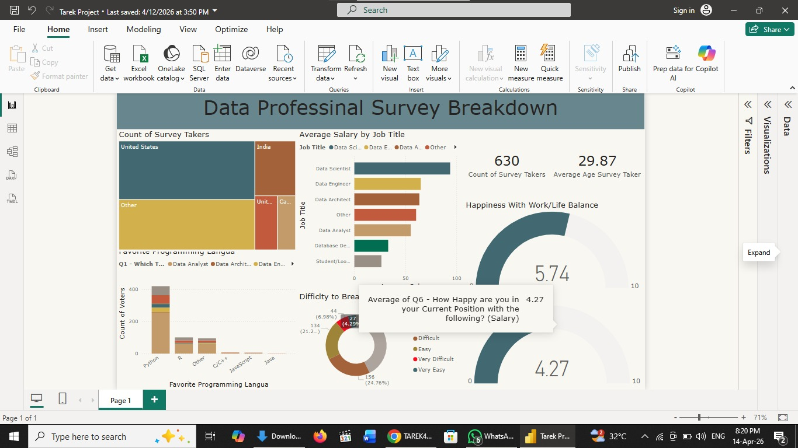

وصف مختصر للمشروع (مثلاً: نظام إدارة مخازن أو تحليل بيانات موظفين).
عرض كود المشروع (SQL)لوحة تحكم تفاعلية شاملة لتحليل بيانات السكن في AirBnB، توضح الأسعار والتوزيع الجغرافي.
عرض لوحة التحكم التفاعليةمشروع يتضمن تنظيف البيانات واستخدام Pivot Tables وبناء داشبورد تفاعلية بالكامل.
تحميل ملف الإكسلتحليل استقصائي لبيانات الاستبيان (Data Professional Survey) باستخدام Power BI، يتضمن معالجة البيانات وتصميم واجهات تفاعلية.
